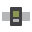
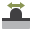
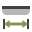
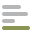
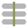
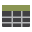
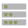

Λύση που φτιάξαμε · Βιομηχανικός εξοπλισμός, τμήμα BIM
Σαράντα εντολές Revit σε μία καρτέλα. Κάθε επαναλαμβανόμενη δουλειά, ένα κουμπί.
Κάθε επαναλαμβανόμενη δουλειά μοντελοποίησης του τμήματος BIM έγινε ένα κουμπί μέσα στο Revit. Τα σχέδια και οι πίνακες από το μοντέλο, που έπαιρναν μια μέρα, βγαίνουν σε 11 λεπτά.
1 μέρα11 λεπτάγια σχέδια και πίνακες από το μοντέλο
Αυτές είναι οι εντολές, ομαδοποιημένες όπως στην καρτέλα του Revit. Δείχνουμε όσες είναι γενικές· μερικές ακόμα είναι φτιαγμένες ειδικά για τα προϊόντα της εταιρείας και μένουν δικές της.
Αεραγωγοί
Mechanical · 11- Duct through ceilingΤοποθετεί τα σημεία ανάρτησης όπου οι αεραγωγοί περνούν από οροφή.
- Duct through wallΤοποθετεί τα σημεία ανάρτησης όπου οι αεραγωγοί περνούν από τοίχο.
- Ventilator on ductΤοποθετεί τα σημεία ανάρτησης για ανεμιστήρες πάνω σε αεραγωγούς.
- Duct splitΚόβει στρογγυλούς και ορθογώνιους αεραγωγούς στα κομμάτια που θα κατασκευαστούν.
- Exhaust runΦτιάχνει ολόκληρη κατακόρυφη απαγωγή μέσα από τη στέγη: αεραγωγό, καπέλο και θυρίδες επιθεώρησης.
- Exhaust offsetΜετατοπίζει έναν αεραγωγό πλάγια με δύο γωνίες, ώστε να συνεχίζει παράλληλα.
- AHU editorΕπεξεργαστής για τα τμήματα της κλιματιστικής μονάδας: φίλτρα, στοιχεία, υγραντήρας, ανεμιστήρας, με αναφορά.

Insert CVD and VAVΒάζει CVD και VAV στον αεραγωγό, μαζί με τους συνδέσμους τους.
Take off main diametersΓράφει τη διάμετρο του κύριου αεραγωγού σε κάθε στρογγυλή διακλάδωση.- QuantitiesΣυμπληρώνει τις συνολικές ποσότητες, όταν το μοντέλο είναι πλήρες.
- Create 3D viewΦτιάχνει ισομετρική 3D όψη του στοιχείου που επιλέξατε.
Καλώδια
Electrical · 6
Cable lengthsΜετρά την απόσταση κάθε σημαδευτή καλωδίου από τον πίνακά του.- Create cable markersΦτιάχνει τους σημαδευτές καλωδίων και τους συνδέει με ένα βήμα.
- Associate cable markerΣυνδέει τις παραμέτρους του σημαδευτή με τις παραμέτρους του family.

Calculate line lengthsΑθροίζει το μήκος των γραμμών, ανά τύπο γραμμής.- Remove conduit linesΑφαιρεί όλες τις γραμμές σωληνώσεων καλωδίων από το μοντέλο.
- Cable infoΔείχνει τα στοιχεία των καλωδίων.
Σωληνώσεις
Plumbing · 5
PP-RCT splitΚόβει τους σωλήνες PP-RCT σε τυποποιημένα μήκη, λίγους ή όλους μαζί.- Replace reductionΑντικαθιστά μια μη έγκυρη συστολή σωλήνα με μια σειρά έγκυρων.
- Weld saddle diametersΓράφει τη διάμετρο του κύριου σωλήνα σε κάθε σέλα συγκόλλησης PP-RCT.
- Flex pipe connectionΕνώνει δύο σωλήνες με εύκαμπτο σωλήνα.
- Copy routing preferencesΑντιγράφει τις ρυθμίσεις δρομολόγησης, τα τμήματα και τα μεγέθη σωλήνων από άλλο έργο, με αναφορά.
Δεδομένα και εξαγωγή
Data · 4- Sheet exportΕξάγει τα επιλεγμένα φύλλα σε PDF, DWG, DWFX και IFC με ένα τρέξιμο.

Data gridΔείχνει τις παραμέτρους πολλών families σε έναν πίνακα, για ανάγνωση και αλλαγή μαζί.- Cable dataΣυγκρίνει τα στοιχεία καλωδίων του μοντέλου με το αρχείο κανονισμού σε Excel.
- Checking toolsΌλοι οι έλεγχοι του μοντέλου σε ένα παράθυρο.
Σχέδιο και families
Plan · 6
Renumber duct systemΑριθμεί ένα δίκτυο αεραγωγών με σειρά, ώστε τα κομμάτια να διαβάζονται στη σειρά στις 3D όψεις.- Center room tagsΚεντράρει κάθε ετικέτα χώρου μέσα στον χώρο της.
- Structure selectorΕπιλέγει μια ολόκληρη ομάδα μεταλλικών στοιχείων με μία κίνηση.
- Align point cloudΜετακινεί, περιστρέφει και γέρνει ένα συνδεδεμένο νέφος σημείων για να ταιριάξει με το μοντέλο.
- Family read parameterΤυπώνει τις παραμέτρους ενός family σε πίνακα, για σύγκριση δίπλα δίπλα.
- Family upgradeΑναβαθμίζει παλιότερα families στην έκδοση Revit που τρέχετε.
Το αποτέλεσμα: 11 λεπτά αντί για μια μέρα.
Υπάρχει κι εσάς μια δουλειά στο Revit που επαναλαμβάνετε κάθε μέρα; Πείτε μας ποια είναι. Θα απαντήσουμε εντός 48 ωρών με το πώς θα το φτιάχναμε.
Όλες οι λύσεις